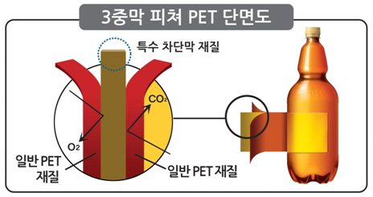
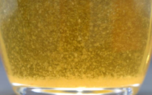
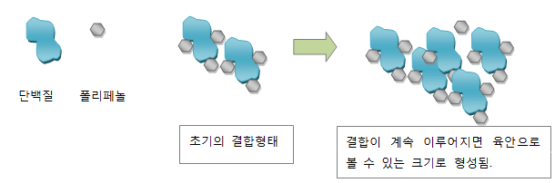

하이트진로 주요서비스
Login
하이트진로 검색
FAQ
궁금한 사항을 보다 빠르게 확인할 수 있습니다.
-
하이트공장은 어디에 있나요?
베스트질문
-
A.
하이트진로 공장은 전국에 총 6곳이 있으며, 맥주 공장은 강원공장, 전주공장, 마산공장이 있으며,
소주 공장은 이천공장, 청주공장, 익산공장이 있습니다.
현재 견학 프로그램을 운영중인 공장은 강원공장, 전주공장, 이천공장, 청주공장이며,
소주 공장은 동절기에는 견학이 불가하오니 신청 전 견학 가능여부를 홈페이지에서 확인 하시기 바랍니다.
▶ 견학문의
맥주 공장) 강원공장 : 033-430-8250~3 / 전주공장 : 063-240-6129(6153,6154)
소주 공장) 이천공장 : 031-644-0824 / 청주공장 : 043-270-1617
견학신청 바로가기 >
참고사항
● 공장견학신청은 무료로 진행되며, 희망일로부터 최소 3주전까지 접수하셔야 합니다. 예약확정은 희망일로부터 2주전에 통보해드립니다.
● 신청인원은 1회 최대 45명을 넘을 수 없습니다.
● 견학신청 공장의 특별한 사정이나 천재이변에 의한 안전사고 발생 우려 시 견학이 취소될 수 있습니다.
● 소주공장(이천, 청주)의 경우 하절기 및 동절기는 견학을 실시하지 않습니다.
공장견학시 유의점
● 월~금요일만 견학 가능 (토요일/일요일/공휴일 견학 불가)
● 공장견학 신청접수는 선착순으로 접수되며, 견학 희망일에 접수가 많을 경우 조기마감 될 수 있습니다.
● 하이트진로는 문자 또는 전화를 통해 고객님을 초대하지 않습니다.
* 특정 단체의 영리 및 상업적 목적에 견학프로그램을 이용할 경우, 이로 인해 발생하는 모든 법적 책임은 신청서를 작성한 대표자에게 있습니다.
● 공장견학 신청시 유선으로 접수는 받지 않습니다.
-
주류 교환 티켓에 유효기간이 있나요?
베스트질문
-
A.
하이트진로에서 발행한 주류 교환(기증주) 티켓은 유효기간이 없습니다.
해당 상품으로의 교환은 티켓 뒷면에 나와 있는 가까운 하이트진로 지점을 참조한 후 방문하여 교환하시면 됩니다.
하이트진로 지점 확인하기 -
하이트진로 고객센터의 전화번호를 알고 싶어요.
베스트질문
-
A.
하이트진로의 고객센터 전화번호는 080-210-0150 입니다.
업무시간 평일&토요일 : 08:30 ~ 22:00 / 일요일 : 09:00 ~ 18:00 이며, 업무시간 외에는 음성 안내 또는 홈페이지 Q&A게시판에 궁금하신 사항을
남겨주시면 업무시간에 확인 후 바로 연락드릴 수 있도록 하겠습니다.
하이트진로 지점 연락처
홈페이지 Q&A게시판 바로가기 -
하이트진로의 마케팅 활동에 대해 알고 싶어요.
베스트질문
-
A.
하이트진로의 마케팅 활동에 관심을 가져주셔서 진심으로 감사합니다.
하이트진로의 마케팅 성공사례는 당사 운영 SNS채널에 자세히 나와있으며,
궁금하신 사항은 Q&A 게시판에 궁금하신 내용을 남겨주시면 관련 담당자가 확인 후 답변 드리도록 하겠습니다.
▶ 하이트진로 공식 sns채널
페이스북 바로가기 블로그 바로가기 트위터 바로가기 유투브 바로가기
하이트 인스타그램 바로가기 맥스 인스타그램 바로가기 참이슬 인스타그램 바로가기 이슬톡톡 인스타그램 바로가기
Q&A 게시판 바로가기 -
하이트진로 포스터는 어디서 받을 수 있나요?
베스트질문
-
A.
당사 광고 모델 포스터는 전국 하이트진로 지점에 방문하시면 받으실 수 있습니다.(본사, 연구소 및 물류센터 제외)
전국 지점 위치와 전화번호는 당사 홈페이지 내(하단 바로가기 링크)에서 확인하시어, 가까운 곳을 방문하시기 바랍니다.
포스터는 지점 별 재고 유무에 차이가 있을 수 있으므로, 방문 전 전화 연락을 통해 재고 유무 및 지점 영업시간을 확인 후 방문 하시기 바랍니다.
하이트진로 지점 확인하기
-
페트 제품의 품질유지기한 왜 짧은가요?
제품불만
-
A.
페트 제품은 개봉하기 쉽고, 운반하기 편리한 장점을 갖고 있습니다.
그러나 재질의 특성상 유리병과는 달리 시간이 오래 경과함에 따라 맥주 속의 탄산가스가 아주 조금씩 페트 밖으로 빠져나갈 수 있습니다.
오래 보관된 제품인 경우 맛이 다소 떨어질 수 있기 때문에 품질유지기한을 병이나 캔에 비해 단축하여 표시하게 된 것입니다.
-
맥주 병마개에 녹이 심하게 슬어 있어요.
제품불만
-
A.
당사에서 출고 후에 1차 거래처(주류도매장)를 거쳐 2차 거래처(소매점 및 업소)를 통하여
소비자에게 전해지는 것이 맥주제품의 일반적인 유통경로입니다.
이 유통과정 중에 보관을 잘못하거나 장마철에는 습기로 인하여 녹이 발생할 수 있습니다.
특히, 유통 중 맥주를 습도가 높은 보관 장소에 보관하거나 비를 맞게 될 경우 정상적인 제품 보다 녹이 발생될 가능성이 높습니다.
당사에서도 거래처에 요청하여 심혈을 기울여 관리 보관할 수 있도록 노력하겠습니다.
이러한 제품이 발생하게 될 경우, 구입처 및 하이트진로 고객센터로 연락 주시면 교환할 수 있도록 도와 드리겠습니다.
하이트진로 고객센터 : 080- 210-0150 -
맥주병을 숟가락으로 오픈했더니 깨졌어요.
제품불만
-
A.
일반적으로 맥주병은 유리 성분으로 외부의 일정한 압력을 받으면 파손될 수 있습니다.
맥주병의 경우 맥주 내부에 탄산가스가 과포화 상태로 녹아 있어 내부 압력이 대기 압력보다 높기 때문에
어느 일정한 압력까지는 용기 자체가 견딜 수 있는 내구성이 있습니다.
숟가락을 사용하여 맥주병을 개봉할 때 어느 정도의 압력이 순간적으로 병 마개가 아닌 병목 상단에 전달되어
병입구가 이 압력을 견디지 못하여 파손될 수 있습니다.
이런 이유로 맥주병을 개봉할 때 오프너를 사용해야만 병입구가 깨지는 것과 파손에 의한 사고를 방지할 수 있습니다.
외국에서는 라이터, 숟가락 등으로 개봉하는 경우는 거의 없습니다.
안전과 좋은 음주 문화를 위해 꼭 오프너를 이용하시어 개봉하시기 바랍니다. -
맥주병을 바닥에 내려 놓는데 퍽하고 깨졌어요.
제품불만
-
A.
맥주는 높은 농도의 탄산가스가 녹아있는 상태로 동결, 해빙(녹는) 과정에서 압력이 크게 발생합니다.
탄산을 포함한 제품은 외부 충격과 온도 변화에 민감하게 반응하여 병 파손이 발생할 수 있습니다.
특히, 유통 중에 반복적으로 가해진 충격으로 인해 병이 약해져 병 내부의 압력을 견디지 못해 깨질 수 있습니다.
정확한 원인은 제품을 분석해야만 알 수 있으므로 하이트진로 고객센터로 연락 주시면 저희 직원이 방문하여 상담 및 교환할 수 있도록 도와드리겠습니다.
하이트진로 고객센터 : 080- 210-0150 -
페트 맥주는 열기 힘이 드는데 왜 그런가요?
제품불만
-
A.
페트 맥주의 마개는 플라스틱 재질로 제품 생산 시 일정한 압력을 가하여 페트병 입구에 밀봉하여 제품을 생산합니다.
생산에 사용하는 압력을 항상 일정하게 유지하기 위하여 타전기(병 마개를 병구에 밀봉하는 기계)의 높이를 일정하게 유지하여 관리하고 있습니다.
유통과정(이송 및 보관) 중 외부 충격, 주변이 고온인 장소에 보관, 직사광선에 오래 노출될 경우 페트 내 압력이 상승하여
용기가 팽창하여 마개를 따기가 더욱 힘들어지는 것으로 예상됩니다.
이러한 제품이 발생하게 될 경우, 구입처 및 하이트진로 고객센터로 연락 주시면 교환할 수 있도록 도와드리겠습니다.
하이트진로 고객센터 : 080- 210-0150 -
페트병 안에 페트가 또 들어 있어요. 왜 그런가요?
제품불만
-
A.
당사 페트 제품은 2개의 일반 페트막과 1개의 특수 차단막으로 이루어진 3중막 페트로 산소와 탄산 차단성이 높은 재질을 사용하고 있으며,
유통과정 중 고온에서의 보관, 직사광선 노출 또는 외부 충격에 의해 3중막 분리 및 페트가 부풀어져 보일 수 있습니다.
또한 3중막은 접착방식에 의해 만들어지지 않았기 때문에 분리되더라도 인체에 무해합니다.
당사 PET 제품  -
품질유지기한이 지난 맥주를 마셨는데 이상 없을까요?
제품불만
-
A.
맥주는 소주, 위스키 등과 같이 오래되어도 괜찮은 제품과 달리 비열처리 발효주이므로
신선할 때 맥주 고유의 맛과 향을 느끼기 위해 품질유지기한 내에 음용하는 것이 가장 좋습니다.
맥주는 보관방법과 제조 후 경과기간에 따라서 제품 맛에 영향을 줄 수 있습니다.
당사 제품의 경우, 페트 제품의 경우 6개월, 병·캔 제품의 경우 10개월 또는 12개월의 품질유지기한을 두고 있습니다.
맥주는 보리를 주원료로 만든 알코올 음료이므로 품질유지기한이 지난 맥주를 마셨다 해도 인체에는 위해가 되지는 않습니다.
다만 맛이 다소 떨어진 것을 느끼실 수 있습니다.
이런 제품을 보관하고 계신 경우, 구매처 또는 하이트진로 고객센터로 연락 주시면 교환할 수 있도록 도와드리겠습니다.
하이트진로 고객센터 : 080- 210-0150 -
페트 제품이 얼었는데 녹여서 먹어도 되나요?
제품불만
-
A.
페트 용기는 특성상 다른 용기와 비교하여 탄성이 더 있습니다.
이로 인해 얼었던 맥주가 해동되는 동안 용기의 수축, 팽창이 일어나 용기의 변형이 일어날 수 있습니다.
맥주 특성상 제품 안에 탄산가스가 녹아 있기 때문에 급격한 온도변화를 가하면 내부 압력의 상승으로
개봉 시 제품이 외부로 흘러 넘치는 경향을 보일 수 있습니다.
또한, 페트 용기와 병마개의 경우 경도가 달라 용기의 온도에 의한 수축 팽창으로 기밀성이 떨어져 해동되는 동안
탄산가스가 용기 외부로(마개 밖) 새어 나올 수가 있습니다.
그러므로 맥주를 빨리 마시기 위해 급하게 얼리는 것은 맥주 맛을 떨어뜨릴 수 있으므로 삼가해야 합니다. -
맥주 맛이 싱겁게 느껴지는 이유는?
제품불만
-
A.
맥주 맛이 싱겁다 라고 느껴지는 경우에는 맥주와 함께 섭취한 음식물에 의한 영향, 그날의 컨디션, 탄산가스의 부족 등을 들 수 있습니다.
탄산이 부족한 원인으로는 주로 유통과정에서 발생합니다.
유통과정 중 병입구 및 마개의 충격에 의해 미세하게 개봉되거나 용기의 파손으로 인해 탄산가스가 빠져나가 싱거운 맛, 밍밍한 맛으로 느껴질 수 있습니다.
하이트진로는 모든 제품에 대해 첨단 전자 기기를 이용하여 공병 및 완제품 검사를 거쳐 사람이 직접 확인하는
육안검사를 시행하고 누주 여부를 확인하는 전자기기 등으로 검사하여 싱거움의 원인이 될 수 있는 요인들을 세심히 관리하고 있습니다. -
캔맥주에서 맥주가 샐 수 있나요?
제품불만
-
A.
유통과정 중 충격을 받아 눈에 보이지 않을 정도의 작은 구멍("핀홀"이라 명명합니다)이 발생될 수 있습니다.
캔 제품은 페트와 함께 가볍고 운반하기 쉽고, 음용하기 쉬운 반면, 날카로운 물체 모서리 등의 충격에 의해 맥주가 샐 수 있으며,
일정 부분 샌 후 맥주 속의 당 성분이 산소와 접촉 후 캔 표면이 마를 경우, 더 이상 새지 않아 용량 부족인 제품 또는 변질된 제품으로 오인할 수 있습니다. -
동결 침전물 발생 시 용량부족 현상 발생은 왜?
제품불만
-
A.
맥주가 얼게 되면, 액체가 고체로 바뀌면서 부피가 증가하여 병마개 쪽으로 맥주가 일부 새어 나와 정상 제품보다 용량이 적게 될 수 있습니다.
따라서 공장에서 생산할 때부터 적게 담은 맥주로 오인할 수 있습니다. -
유통과정 중 용량부족이 발생할 수 있는 원인은?
제품불만
-
A.
유통과정 중 용량부족은 아래와 같은 이유로 발생할 수 있습니다.
유리병
유통과정 중 충격에 의한 병 마개의 미세 개봉, 파손 등
캔제품
캔 표면에 날카로운 물체 또는 충격 등에 의해 미세한 구멍이 발생하여 일부 맥주 내용물이 새어 나온 경우
페트제품
페트가 더운 곳에 보관되어 페트 표면이 미세하게 커져 정상 제품보다 용량이 적어 보이는 경우
또는 겨울철 한파, 냉동 보관 등으로 맥주가 얼게 되면 부피가 팽창하고 맥주 뚜껑으로 맥주가 새어 나와 오해할 수 있습니다. -
맥주가 얼게 되면 침전물이 생기나요?
제품불만
-
A.
낮은 영하의 온도에서 장기간 보관하여 동결 및 용해가 여러 차례 반복되었을 때 동결 침전물이 발생할 수 있습니다.
따라서 겨울철 맥주 제품의 보관조건이 매우 중요하며 맥주를 급랭하지 않도록 주의해야 합니다.
즉, 맥주를 얼리지 않는 것이 침전물을 방지하는 지름길이겠죠!
-
침전물의 성분은 무엇인가요?
제품불만
- A. 맥주의 침전물 중 주요 성분은 단백질, 폴리페놀, 고분자 당질, 유기산 등 입니다.
-
맥주 침전물이 왜 발생하나요.
제품불만
-
A.
침전물은 시간이 지나면서 생기는 자연스러운 현상입니다.
맥주가 생산된 후 시간이 지나면 자연적으로 맥주 성분들이 결합하여 응고물이 생기는 데 이를 “침전물” 또는 “혼탁”이라 말합니다.
맥주를 마시다 이러한 현상을 보고 이물질의 일종으로 “휴지 풀어놓은 것 같다”, "하얀색 또는 갈색 나는 이물질로 보인다” 등으로
오해하시는 경우도 있습니다.
이러한 현상은 국내맥주뿐만 아니라 외국맥주에서도 발견할 수 있습니다.
 맥주는 보리를 원료로 하여 만드는데 보리에 함유된 단백질과 폴리페놀 등은 눈에 보이지 않지만 보관하는 동안,
자연적으로 이러한 성분들이 서로 결합하여 침전물을 만듭니다.
일반적으로 오랫동안 집안에서 보관하거나, 업소에서 선입선출이 안되어 발견되기도 합니다.
특히 맥주의 보관조건 중, 주변온도가 높거나 낮은곳, 햇빛노출이 심한 곳 등에서 침전물의 발생이 더욱 빨라질 수 있습니다.
맥주 제품은 생산 후 유통 중에 쉽게 보이지 않지만 위에서 설명한 바와 같이 보관조건 및 장기간 보관 시 미세하게 침전물이 보이다가,
육안으로 쉽게 확인할 수 있는 수준으로 커지는 현상을 보입니다.
아래 그림을 참조하시면, 이해하시는데 도움이 될 것입니다.
 이러한 제품은 인체에는 무해하지만 맥주 본연의 맛이 떨어지므로 음용하지 마시고
구매처에서 교환하시거나 하이트진로 고객센터(080-210-0150)로 연락 주시면 교환할 수 있도록 도와드리겠습니다. -
가게에 빈 병을 가져다 주었는데, 제대로 돈을 안줘요.
제품불만
-
A.
맥주, 소주 등의 술병은 “주세법”에 근거하여 “공병보증금제도”를 적용받고 있습니다.
따라서 음료수나 술을 마신 후 빈병을 가까운 슈퍼나 판매처에 가져가시면 병에 적혀있는 액수만큼 받으실 수 있습니다.
만일 슈퍼나 판매처에서 빈병 가격만큼 주질 않는다면, 이는 판매처가 제조업체로부터는
관련 금액을 전액 환불받으면서 소비자에게는 주지 않는 부당한 행위로 볼 수 있습니다.
소비자가 반환하는 청량음료병, 소주병, 맥주병등 빈병 가격을 제대로 주지 않는 소매업자는 최고 300만원의 과태료가 부과됩니다.
빈병 회수를 거절할 경우 다음의 관련 기관으로 문의하시면 자세히 안내받으실 수 있습니다.
* 관할세무서 부가가치세과
* 관할 지방국세청 소비세과
* 대한 주류공업협회
* 빈용기 보증금 상담센터 : 1522-0082
-
하이트진로 제품(병)에 다른 회사의 로고가 있어요.
제품불만
-
A.
당사는 정부의 자원 재활용 방침에 따라 병 크기가 같은, 하이트맥주와 참이슬의 경우 타사의 빈병을 서로 사용하고 있습니다.
이러한 이유로 타사 빈병에 자사 제품의 내용물과 라벨이 붙어 있는 것을 종종 발견할 수 있습니다.
품질에 이상이 없는 제품이오니 안심하고 드셔도 됩니다.
-
하이트진로의 채용정보에 대해 알고 싶습니다.
채용
-
A.
대한민국 주류의 역사, 하이트진로에서는 뜨거운 열정을 가진 우수한 인재를 기다립니다.
하이트진로의 채용 관련 자세한 내용은 채용정보를 참고해 주시길 바랍니다!
채용정보 바로가기
-
아이디/비밀번호를 변경하고 싶어요.
웹사이트문의
-
A.
아이디는 원칙적으로 변경할 수 없습니다.
만약 아이디를 변경하고자 한다면 회원탈퇴를 하신 후 재가입을 하셔야 합니다.
비밀번호는 회원정보변경 페이지에서 변경이 가능합니다.
[비밀번호 변경 방법]
하이트진로 홈페이지 로그인 -> “회원정보 변경” 로 이동 -> “비밀번호 변경” 메뉴 클릭 -> 현재 비밀번호 입력 -> 비밀번호 변경 -
회원가입, 정보수정, 탈퇴는 어떻게 하나요?
웹사이트문의
-
A.
회원가입 방법
① 하이트진로 사이트 내 우측 상단에 [JOIN] 버튼을 클릭 합니다.
② 이용약관 및 정책동의 페이지 확인 후 동의
③ 핸드폰 혹은 아이핀으로 실명인증 진행
④ 회원정보 입력
⑤ 회원가입 완료
개인정보 수정 방법
① 하이트진로 사이트 내 우측 상단에 [LOGIN] 버튼을 클릭 합니다.
② 아이디 및 비밀번호 입력하여 로그인 합니다.
③ 하이트진로 사이트 내 우측 상단에 [마이페이지] 버튼을 클릭 합니다.
④ 좌측 메뉴에서 [회워정보 변경] 메뉴를 클릭 합니다.
⑤ 정보변경 페이지에서 변경하고자 하는 정보를 수정 입력 합니다.
※ 개인의 정보가 정확해야만 각종 이벤트 당첨 시 상품수령에 문제가 없습니다.
회원탈퇴 방법
① 하이트진로 사이트 내 우측 상단에 [LOGIN] 버튼을 클릭 합니다.
② 아이디 및 비밀번호 입력하여 로그인 합니다.
③ 하이트진로 사이트 내 우측 상단에 [회워정보 변경] 버튼을 클릭 합니다.
④ 우측 메뉴에서 [회원탈퇴] 메뉴를 클릭 합니다.
⑤ 페이지 내에서 아이디/ 비밀번호를 입력하면 탈퇴가 완료 됩니다. -
이벤트/공장견학 신청 시 에러가 발생해요.
웹사이트문의
-
A.
하이트진로 홈페이지를 이용중에 장애가 발생하는 경우 해당하는 화면을 캡처하거나 자세한
오류 사항을 홈페이지 관리자에게 문의하시면 신속하게 문제를 해결하여 드리겠습니다.
하이트진로 홈페이지 관리자 : webmaster@hitejinro.com -
회원탈퇴를 하고싶습니다.
웹사이트문의
-
A.
하이트진로 홈페이지를 이용하시는데 불편함이 있으셨나요?
고객님께서는 하이트진로 홈페이지에서 회원탈퇴를 직접 하실 수 있습니다.
회원탈퇴 방법
① 하이트진로 사이트 내 우측 상단에 [LOGIN] 버튼을 클릭 합니다.
② 아이디 및 비밀번호 입력하여 로그인 합니다.
③ 하이트진로 사이트 내 우측 상단에 [회원정보 변경] 버튼을 클릭 합니다.
④ 우측 메뉴에서 [회원탈퇴] 메뉴를 클릭 합니다.
⑤ 페이지 내에서 아이디/ 비밀번호를 입력하면 탈퇴가 완료 됩니다.
만약 직접 회원탈퇴가 어려우신 고객님께서는 홈페이지 관리자에게 문의주시면 성심성의껏 도와드리겠습니다.
하이트진로 홈페이지 관리자 : webmaster@hitejinro.com -
홈페이지 회원가입이 안되요.
웹사이트문의
-
A.
하이트진로 홈페이지는 만 19세 미만의 미성년자는 회원가입이 되지 않습니다.
따라서 해당일자에 성년이 해당되는지를 확인하여 주시기 바랍니다.
또한, 실명인증이 되어야 하며 실명인증 확인은 한국신용평가정보 실명확인 서비스에서 하실 수 있습니다.
그 외의 이유로 회원가입이 되지 않을 경우에는 홈페이지 관리자에게 문의바랍니다.
하이트진로 홈페이지 관리자 : webmaster@hitejinro.com -
개명(改名) 후 홈페이지에서 이름 변경을 하고 싶어요.
웹사이트문의
-
A.
개명(改名)을 거쳐 실명인증 사이트(한국신용평가정보)에서도 실명등록을 새롭게
하셨다면 하이트진로 홈페이지에서도 이름 변경이 가능합니다.
홈페이지 Q&A 게시판 또는 이메일, 전화상담을 통해 변경된 이름과 함께 사용하고
계신 ID를 말씀해 주시면 본인확인 후 변경된 이름 정보로 회원정보를 수정해 드리겠습니다.
하이트진로 홈페이지 관리자 : webmaster@hitejinro.com 하이트진로 고객센터 : 080 - 210 - 0150 -
실명인증이 안되요.
웹사이트문의
-
A.
정상적인 실명인증이 안되는 것은 금융기관과의 거래가 없을 경우 많이 발생을 합니다.
대학생 신분일 경우 많이 발생하는데, 이럴 경우에는 한국신용평가정보에서 무료로
운영중인 개인 정보 갱신 서비스를 이용하시면 바로 회원가입을 하실 수 있습니다.
한국신용평가정보 -
하이트 홈페이지의 해상도 기준은 어떻게 되나요?
웹사이트문의
-
A.
현재 하이트진로 홈페이지는 최근 보편화된 모니터 해상도 1980X1024에 맞춰져 있습니다.
간혹 낮은 해상도를 사용하는 회원님들이 있긴 하나 하이트진로 홈페에지의 User Interface는
최근의 모니터와 해상도 이용상황 등의 사용자 환경을 고려한 결과에 따르고 있음을 알려 드립니다.
-
하이트진로 공장은 어디에 있나요?
공장견학
-
A.
하이트진로 공장은 전국에 총 6곳이 있으며, 맥주 공장은 강원공장, 전주공장, 마산공장이 있으며,
소주 공장은 이천공장, 청주공장, 익산공장이 있습니다.
현재 견학 프로그램을 운영중인 공장은 강원공장, 전주공장, 이천공장, 청주공장이며,
소주 공장은 동절기에는 견학이 불가하오니 신청 전 견학 가능여부를 홈페이지에서 확인 하시기 바랍니다.
▶ 견학문의
맥주 공장) 강원공장 : 033-430-8250~3 / 전주공장 : 063-240-6129(6153,6154)
소주 공장) 이천공장 : 031-644-0824 / 청주공장 : 043-270-1617
견학신청 바로가기 >
참고사항
● 공장견학신청은 무료로 진행되며, 희망일로부터 최소 3주전까지 접수하셔야 합니다. 예약확정은 희망일로부터 2주전에 통보해드립니다.
● 신청인원은 1회 최대 45명을 넘을 수 없습니다.
● 견학신청 공장의 특별한 사정이나 천재이변에 의한 안전사고 발생 우려 시 견학이 취소될 수 있습니다.
● 소주공장(이천, 청주)의 경우 하절기 및 동절기는 견학을 실시하지 않습니다.
공장견학시 유의점
● 월~금요일만 견학 가능 (토요일/일요일/공휴일 견학 불가)
● 공장견학 신청접수는 선착순으로 접수되며, 견학 희망일에 접수가 많을 경우 조기마감 될 수 있습니다.
● 하이트진로는 문자 또는 전화를 통해 고객님을 초대하지 않습니다.
* 특정 단체의 영리 및 상업적 목적에 견학프로그램을 이용할 경우, 이로 인해 발생하는 모든 법적 책임은 신청서를 작성한 대표자에게 있습니다.
● 공장견학 신청시 유선으로 접수는 받지 않습니다.
-
공장견학 인원이 제한되어 있나요?
공장견학
-
A.
공장견학 시 인원제한이나 자격요건은 없으나, 사전 예약제로 운영되는 견학 프로그램으로,
견학일 최소 20일 전에는 미리 견학일정을 확인하신 후 예약을 하시는 것이 좋습니다.
또한, 한 번에 견학할 수 있는 인원이 최대 80-100명이므로, 최대 인원보다 많을 경우 견학시간을 나누어 견학이 진행되며,
소수 인원일 경우는 같은 견학 시간대의 다른 단체와 같이 견학이 진행될 수도 있습니다.
▶ 견학문의
맥주 공장) 강원공장 : 033-430-8250~3 / 전주공장 : 063-240-6129(6153,6154)
소주 공장) 이천공장 : 031-644-0824 / 청주공장 : 043-270-1617
견학신청 바로가기 >
-
참이슬 마케팅 전략에 대해 알고 싶습니다.
제품
-
A.
참이슬 fresh의 성공 비결은 현재 업계는 물론 대학 마케팅학과에서도 연구 대상이 되고 있습니다.
참이슬 fresh가 히트할 수 있었던 가장 큰 요인은 처음으로 과학적 공법을 적용했다는 사실을 부각시킨 점입니다.
이것이 소비자들에게 신뢰감을 심어주었던 것입니다.
참이슬 fresh를 출시하면서 대나무숯에 여과해 만들었기 때문에 '마시기 부드럽고 마신 후에는 머리가 깨끗하다'는 내용을 마케팅 컨셉으로 활용한 전략이 적중한 것입니다. '소주도 마시기 부드러운 술' 이라는 인식이 퍼지면서 소주 수요층이 중장년층에서 젊은층과 여성에게까지 확산됐습니다.
또한 참이슬의 깨끗한 이미지를 광고에서도 적극적으로 활용해, 소비자들에게 깊은 인상을 심어주었습니다.
여기에 도우미들을 활용한 다양한 판촉활동, 온라인을 통한 적극적 이벤트 등 기타 제품과 비교할 수 없는 차별화된 마케팅전략을 펼침으로써
참이슬의 신화는 지금도 변함없이 이어지고 있습니다.
-
hite가 무슨 뜻인가요?
제품
-
A.
hite 네이밍의 배경은 Height와 White의 단어가 조합된 것으로, 깨끗하고 순수한 맥주, 대한민국 대표 맥주의 의미를 내포하고 있습니다.
또한 각각의 이니셜을 통해 설립당시 하이트맥주의 경영이념을 나타내고 있습니다.
H - humanity (인간존중의 경영)
I - Innovation (미래지향의 경영)
T - Trust (고객 신뢰의 경영)
E - Excellence (품질 제일의 경영) -
하이트진로의 마케팅 활동에 대해 알고 싶어요.
제품
-
A.
하이트진로의 마케팅 활동에 관심을 가져주셔서 진심으로 감사합니다.
하이트진로의 마케팅 활동은 당사 운영 SNS채널에 자세히 나와있으며, 궁금하신 사항은 Q&A 게시판에 궁금하신 내용을 남겨주시면
관련 담당자가 확인 후 답변 드리도록 하겠습니다.
페이스북 바로가기 블로그 바로가기 트위터 바로가기 유투브 바로가기
하이트 인스타그램 바로가기 맥스 인스타그램 바로가기 참이슬 인스타그램 바로가기 이슬톡톡 인스타그램 바로가기
Q&A 게시판 바로가기 -
술을 직접 싸게 구입할 수 있나요?
제품
-
A.
주류 유통 경로상 제조사에서는 소비자에게 직접 주류를 판매할 수 없습니다.
따라서 일반용 제품을 구입할 경우 할인점이나 슈퍼에서 구매하여야만 합니다. -
참이슬 fresh의 성공요인은 무엇인가요?
제품
-
A.
참이슬이 국내 소주시장에서 부동의 1위를 차지할 수 있었던 것은 소비자의 욕구를 적극적으로 찾아내고
이를 만족시키기 위해 끊임없이 노력했기 때문입니다.
우선 국내 최초로 대나무숯 여과공법을 도입해 잡미와 불순물을 제거함으로써 깔끔하고 깨끗한 맛을 실현한 것이 주효했습니다.
또한 기존 소주에 비해 도수가 낮아 부드럽다는 점도 소비자들에게 크게 어필했습니다.
출시 당시 참이슬은 알코올도수 23도로 기존 소주보다 2도나 낮았습니다. 부드러운 술을 선호하는 소비자의 기호를 정확하게 파고든 셈입니다.
감각적인 패키지와 네이밍도 제품을 돋보이게 하는 요소입니다.
패키지는 부드럽고 깨끗한 느낌의 에머럴드 그린 컬러를 사용하여 건강, 신선, 자연 지향의 이미지를 추구하고 네이밍은 진로의 한자적 의미를
우리말로 풀어내면서 깨끗하고 순수함을 연상시키고 있습니다.
또한 제품과 모델의 깨끗한 이미지를 잘 연결시킨 광고전략, 온라인을 통한 다양한 판촉활동, 합리적인 가격 설정 등
차별화된 마케팅 전략이 성공요인으로 작용했기 때문입니다. -
공병보증금 제도가 무엇인가요?
제품
-
A.
공병보증금제도는 소비자가 술을 살 때 가격에 빈병 보증금을 포함하여 지불하였다가
이후 빈병을 반환하면 이미 지불하였던 보증금을 되돌려 받는 제도 입니다. 이는 적극적인 공병 회수를 통해 환경오염을 방지하고,
회수된 공병을 재활용함으로써 귀중한 자원을 절약하는 제도입니다.
우리나라의 공병보증금제도는 1985년에 시행되어 종전 회수율 70%를 훨씬 상회하는 95%에 이르는 커다란 성과를 나타내고 있습니다.
현재 공병보증금 단가는 400㎖미만의 용기는 40원, 400㎖∼1ℓ의 용기는 50원, 1ℓ이상의 용기는 100원입니다.
따라서 400㎖ 미만이 대부분인 소주는 40원, 400㎖ 이상이 대부분인 맥주는 50원입니다.
공병보증금제도를 통해 당사가 회수하는 공병의 양은 매년 생산량의 평균 95% 수준으로 당사가 지불하는 보증금액은 연 485억원에 이르고 있습니다.
환경을 보호하고 귀중한 자원을 재활용할 수 있는 공병보증금제도의 발전은 오로지 소비자 여러분의 몫입니다.
병안에는 담배꽁초나 병마개 등 이물질은 절대로 넣지 마시고, 깨끗한 빈병을 가까운 가게나 편의점 등에 반환하시고
소정의 보증금을 돌려 받으시기 바랍니다. -
생산되는 공장별로 소주 맛의 차이가 있나요?
제품
-
A.
결론적으로 맛의 차이는 없습니다.
소주의 원액이 되는 주정의 생산과 희석과정, 사용하는 물 모두 똑같은 조건 아래 생산되기
때문에 제품의 맛 차이는 없다고 할 수 있습니다. -
TV에서 소주광고는 왜 나오지 않나요?
제품
- A. 현재 주류 광고는 지나친 음주조장을 예방하고, 19세미만 청소년 보호를 목적으로 국민건강증진법 시행령에 따라 17도 이상의 제품(소주류) 경우 방송광고가 전면 금지되어 있으며, 17도 미만 주류(맥주류)에 대해서도 7시 ~ 22시까지 광고를 제한하고 있습니다.
-
소주병은 왜 녹색인가요?
제품
-
A.
초록색 소주병은 차고 깨끗하며, 자연과 건강을 생각하는 마케팅적 측면이 숨겨져 있습니다.
소주는 다른 술과 달리 무색, 투명하기 때문에 무슨 색을 사용하든 용기의 색깔이 그대로 살아납니다.
초록색으로 소주병을 만든 이유는 부드럽고 자연친화적인 이미지를 가진 녹색의 느낌을 소비자들에게 그대로 전달하여
소주가 건강에 나쁠 것이라는 선입견을 보완해 주는 역할을 하기 때문입니다. -
소주에 암소주가 있다는데?
제품
-
A.
현재 국내 주류업체는 환경보호와 자원재활용 차원에서 판매된 제품의 공병을 수거하여 세척한 후 재활용하는 공병보증금제도를 시행하고 있습니다.
(소주 외에 맥주, 음료수 등도 시행 중임.)
당사의 경우 공병 회수 시 하이트진로 병만을 수거 및 선별하려고 노력함에도 불구하고
일부 타회사 공병이 몇 박스당 1-2병 섞여 들어오는 경우가 발생할 수 있습니다.
애주가들이 참이슬 fresh 병모양과 상이한 병(병나사 밑 부분 테두리가 없는 병)을 흔히 암소주라고 하는데
이것은 타회사의 소주병이 섞인 것으로 병모양이 약간 다르더라도 하이트진로의 기술로 만든 동일한 제품으로서 암컷, 수컷에 대한 품질 및 공정의 차이가 없습니다.
따라서 진로 제품은 어느 것이나 안심하고 드셔도 좋습니다 -
소주의 유통기간은 어떻게 되나요?
제품
-
A.
막걸리나 약주, 맥주, 청주, 와인과 같은 발효주의 경우에는 기간이 오래되면 술이 변질되기 때문에 유통기한을 따로 정하고 있습니다.
하지만 소주나 위스키 브랜디의 경우는 증류주로서 도수도 높고 변질될 소재가 술 안에 없기 때문에 유통기한이 없습니다.
국세청 기술연구소 연구결과에 의하면 알코올 도수가 20도를 초과하는 제품은 변질되지 않습니다. -
참이슬 fresh 한 병은 몇 잔이 나오나요?
제품
-
A.
잔의 크기나 한잔 따를 때마다의 양의 차이 때문에 정확히 몇 잔이라 말씀드리긴 어렵습니다.
하지만 참이슬 fresh 잔이 60㎖이고 한 병이 360㎖이므로 보통 한 잔에 80%정도만 따른다고 할 때 약 7잔 반 정도가 나오게 됩니다. -
하이트진로 재무제표는 어디서 확인 하나요?
제품
-
A.
하이트진로의 재무제표는 홈페이지 투자 정보에서 제공해 드리고 있습니다.
하이트진로 IR -
맥주에는 유통기한이 없나요?
제품
-
A.
맥주는 주세법상 2009년 5월부터 품질유지기한을 표기하도록 되어 있습니다.
품질유지기한 표시 제도는 장기간 보관 유통해도 부패나 변질이 적은 식품(맥주, 김치, 간장, 된장, 고추장, 레토르트식품 등)에
대해 유통기한 대신 표시하는 제도로, 해당 제품의 특성에 맞는 적절한 보존방법에 따라
보관할 경우 가장 좋은 품질이 유지될 수 있는 기한을 말합니다.
하이트진로에서는 생산되는 모든 맥주에는 제조일자와 품질유지기한이 표기되어 있으며,
병맥주와 페트맥주는 상표에, 캔맥주는 밑바닥에 기재되어 있습니다.
맥주는 보관조건만 잘 갖추어 있다면 품질유지기한 표시를 넘어서도 음용이 가능한 제품입니다.
하이트진로에서는 최상의 맥주 맛을 공급하고자 품질기한이 지난 제품에 침전물이 생겼을 경우 무료로 교환해주는 행사하고 하고 있습니다.
구매처 또는 하이트진로 고객센터로 연락 주시면 교환할 수 있도록 도와드리겠습니다.
▶ 당사 맥주 제품 품질유지기한 표시
hite, Dry d, Stout : 병/캔 12개월, PET 6개월
Max, S : 병/캔 10개월, PET 6개월
하이트진로 고객센터 : 080- 210- 0150 -
맥주는 어떻게 마셔야 제일 맛있나요?
제품
- A. 첫째, 적당한 온도에 마셔야 합니다. 맥주는 온도가 높으면 쓴맛이 강하게 느껴지고 너무 차면 거품이 나지 않을 뿐 아니라 참 맛도 느낄 수 없게 됩니다. 맥주를 가장 마시기 적당한 온도는 여름철 4-8℃, 겨울철 8-12℃로 알려져 있습니다. 둘째, 거품과 함께 단숨에 마셔야 합니다. 거품은 흔히 맥주의 꽃이라고 합니다. 거품은 맥주 속의 탄산가스가 날아가는 것을 막아주어 맥주의 맛이 오래도록 지속될 수 있게 만드는 역할을 합니다. 시원한 맥주를 느끼기 위해서는 거품과 함께 단숨에 잔을 비워주는 센스가 필요하겠죠. 셋째, 맥주컵은 늘 깨끗한 상태를 유지합니다. 맥주잔에 기름기 등이 남아 있게 되면 풍부한 거품이 잘 나지 않고 쉽게 꺼질 수 있습니다. 깨끗한 상태의 맥주잔을 준비한 후 잔 자체를 차게 하여 맥주를 따라 드시면 기쁨이 두 배랍니다. 넷째, 맛있는 안주는 맥주와 환상의 하모니를 이룹니다. 단맛이 나는 것보다는 약간의 지방질과 단백질이 풍부한 음식, 신선한 채소와 과일 등 취향 따라 골라먹는 재미를 느껴보세요.
-
왜 맥주 병을 갈색으로 사용하나요?
제품
-
A.
맥주는 빛에 오래 노출되면 맥주 고유의 향이 변하여 안좋은 냄새가 발생합니다.
따라서 이러한 냄새 발생을 최소화하기 위해 갈색병을 사용합니다.
맥주 고유의 향을 제대로 유지하려면 햇볕이 들지 않는 서늘한 보관장소에 보관하시고 되도록 빨리 음용 하시는 것이 좋습니다. -
맥주는 무엇으로 만드나요?
제품
-
A.
일반적으로 맥주는 보리를 원료로 하여 만든 맥아 외에 홉, 효모, 물 등의 원료를 사용하여 만듭니다.
맥아의 일부분을 대신하여 주로 옥수수전분 등의 부원료를 사용하기도 합니다.
이때 부원료를 사용하지 않고 만든 맥주를 통상 올몰트비어(All malt beer)라 합니다.
유럽에서 생산되는 대부분의 맥주들이 여기에 속합니다. 당사에서 만드는 올몰트비어 제품으로는 Max가 해당되고,
나머지 hite, Dry d, S, Stout 제품들은 부원료를 일부 사용하여 만듭니다. -
생산되는 맥주 제품 종류를 알고싶어요.
제품
-
A.
당사에서 생산하고 있는 맥주 제품은 다음과 같습니다.
hite - 80년 맥주 제조 노하우로 완성된 정통 Pale Lager
맥스 - 몰트와 홉의 완벽한 비율, 크리미한 거품까지 더해 올몰트비어 맛의 클라이맥스를 완성
드라이 d - 드라이공법으로 잔미를 제거하여 극대화된 시원함
에스 - 1/3 더 낮아진 칼로리로 탄생한 Premium Light Beer!
스타우트 - 독일산 흑맥아를 사용하여 더욱 풍부하고 진한 국내 유일의 라거타입 흑맥주
퀸즈에일 - Triple hopping process로 완성된 정통 Premium Pale Ale 맥주
맥주제품 자세히 보기 -
맥주의 칼로리는 얼마나 되나요?
제품
-
A.
알코올 1g에는 약 7kal가 들어있습니다.
단순히 알코올만을 고려한다면 500ml 맥주 한 병에는 약 157.5kcal가 들어있다고 말할 수 있습니다.
사람들이 흔히 맥주 한 잔, 소주 한 잔 그리고 양주 한 잔의 칼로리가 같다고 말하는 것은 알코올 안에 들어있는 칼로리만을 계산할 때입니다.
다이어트 때문에 칼로리가 걱정되신다면, 당사에서 생산되는 S맥주를 권해드립니다.
S맥주 한 병에는 딸기 8개 또는 사과 1/2개를 먹어야 섭취할수 있는 식이섬유가 1.65g 함유되어 있어, 몸매 관리에도 도움이 됩니다. -
'Fresh 365'가 무슨 뜻인가요?
제품
-
A.
하이트진로는 업계 최초로 2006년 하반기부터 음용권장기한 제도를 도입하여 소비자들이 보다 신선한 맥주를 음용하실 수 있도록 하였습니다.
이에 따른 캠페인의 일환으로 Fresh 365는 병/캔 맥주는 1년, PET 맥주는 6개월 이상 지난 제품(제조일자 기준) 바꿔드리는 행사입니다.
-
생맥주 기계를 철거해주세요.
생맥주
-
A.
하이트진로 생맥주 기계는 거래 도매장 또는 관할 하이트진로 지점을 통해 철거가 가능합니다.
당사 전국 지점 위치 및 연락처는 홈페이지 내 '지점 안내' 또는 하단 링크를 클릭하시어 확인하시기 바랍니다.
하이트진로 지점 연락하기 -
생맥주 맛이 이상하거나 냄새가 나요.
생맥주
-
A.
생맥주 맛이 이상하거나 냄새가 난다면 몇 가지 사항을 확인으로 문제점을 해결할 수 있습니다.
첫째, 생맥주통의 보관상태가 불량하진 않으셨나요?
생맥주통은 직사광선에 보관하지 마시고 10도 이하의 저온에서 보관하여야 하며, 심한 온도변화가 없도록 주의해주시고,
생맥주통 보관냉장고를 이용하시면 더욱 좋습니다.
둘째, 호스에 찌든 때가 껴있진 않나요?
생맥주 라인호스를 정기적으로 세척해주시고, 세척으로 제거가 안될시 A/S를 의뢰하여 라인호스를 교체하여야 합니다.
셋째, 생맥주통을 개봉한 상태로 장기간 영업하진 않으셨나요?
개봉한 생맥주는 가능한 빠른 시일 내에 판매하여야 하며 영업종료 시 탄산가스의 메인 밸브와 중간 밸브를 잠가주시고 헤드를 생맥주통에서 분리하시고
매일 생맥주 라인 세척을 통하여 잔류 맥주를 제거하여야 합니다.
넷째, 탄산가스의 압력이 비정상적이지는 않습니까?
탄산가스의 압력이 비정상적일 경우 거품발생으로 인해 생맥주 맛에 영향을 주므로 게이지의 압력 조절나사를 돌려 적정압력으로 설정해주셔야 합니다.
탄산가스 압력은 대형 40~50, 중형 30~40, 소형 30~35로 맞춰주시고, 여름철에는 평상시보다 5~10정도 압력을 높여주세요.
상기 4가지 사항을 조치하였는데도 생맥주가 잘 나오지 않는다면, 당사 지점에 A/S를 의뢰하여 주시기 바랍니다. -
생맥주 따를 때 거품이 적게 나와요.
생맥주
-
A.
거품이 적다면 몇 가지 사항을 확인으로 문제점을 해결할 수 있습니다.
첫째, 탄산가스의 압력이 너무 낮지 않나요?
탄산가스의 압력이 비정상적일 경우 거품 발생에 영향을 주어 생맥주 맛에 영향을 주므로 게이지의 압력 조절나사를 돌려
적정압력으로 설정해주셔야 합니다. 탄산가스 압력은 대형 40~50, 중형 30~40, 소형 30~35로 맞춰주시고, 여름철에는 평상시보다 5~10정도 압력을 높여주세요.
둘째, 맥주 따르는 곳(코크) 좌측 유량조절기 적정 위치에 고정되어 있나요?
유량조절기는 밑으로 내릴수록 많은 양이 나오므로 중간 위치에 두어 적정량이 나오도록 합니다.
상기 2가지 사항을 조치하였는데도 생맥주가 잘 나오지 않는다면, 당사 지점에 A/S를 의뢰하여 주시기 바랍니다. -
생맥주는 시원하나 거품이 많이 생겨요.
생맥주
-
A.
거품이 많다면 몇 가지 사항을 확인으로 문제점을 해결할 수 있습니다.
첫째, 생맥주통을 냉장고에 보관할 때 냉각기 온도보다 낮게 보관하진 않으셨나요?
냉장고 온도를 4~6도로 유지하여 사용해보세요.
둘째, 운반 도중 생맥주통이 심하게 흔들린 경우 거품이 많이 생길 수 있습니다.
생맥주통 교체 시 생맥주통이 심하게 흔들리지 않도록 주의하셔야 합니다.
셋째, 탄산가스 압력게이지의 바늘이 설정한 값에 위치하지 않고 심하게 흔들릴 경우
고장이므로, 바로 A/S 의뢰를 하여야 합니다.
넷째, 탄산가스의 압력이 너무 높거나 낮지 않나요?
탄산가스의 압력이 비정상적일 경우 거품발생으로 인해 생맥주 맛에 영향을 주므로 게이지의 압력 조절나사를 돌려 적정압력으로 설정해주셔야 합니다.
탄산가스 압력은 대형 40~50, 중형 30~40, 소형 30~35로 맞춰주시고, 여름철에는 평상시보다 5~10정도 압력을 높여주세요.
다섯째, 맥주따르는 곳(코크) 좌측 유량조절기 적정위치에 고정되어 있나요?
유량조절기는 밑으로 내릴수록 많은 양이 나오므로 중간위치에 두어 적정량이 나오도록 합니다.
여섯째, 생맥주 라인호스가 길거나 보온이 안되어 있나요?
A/S에 의뢰하여 생맥주 라인호스를 짧게 조절하고 보온처리를 하여야 합니다.
상기 6가지 사항을 조치하였는데도 생맥주가 잘나오지 않는다면, 당사 지점에 A/S를 의뢰하여 주시기 바랍니다. -
생맥주가 시원하지 않고 거품이 많아요.
생맥주
-
A.
생맥주가 시원하지 않고 거품이 많다면 몇가지 사항을 확인으로 문제점을 해결 할수 있습니다.
첫째, 냉각기의 전원상태를 확인해주세요.
콘센트, 멀티콘센트, 전원코드, 휴즈의 연결상태를 확인해주세요,
둘째, 냉각기의 얼음 어는 시간이 길고, 열이 많이 나나요?
콘덴샤(라지에타) 냉각핀에 먼지를 제거해주시고, 냉각기 주변의 장애물을 치워 공기의 흐름이 자유롭게 해주시고, 열발생이 많은곳(튀김기, 냉장고등)에 설치되지 않도록 장소를 이동해주세요.
셋째, 냉각기 용량이 초과로 냉각기 안의 얼음이 녹진 않았나요?
냉각기 용량초과로 얼음이 얼지 않았을 경우 얼음이 다시 생길때까지 생맥주 판매를 잠시 중단하여야 합니다.
넷째, 냉각기 안에 냉각수가 부족하진 않나요?
냉각기 뚜껑을 열어 냉각수가 부족하다면, 호스를 이용해 상부 배수구에서 물이 나올때까지 물을 보충해 줍니다.
다섯째, 여름철 더운곳에 보관되어 있던 생맥주를 사용하진 않으셨나요?
생맥주통을 냉장고를 이용하여 4~5시간 보관하거나, 열기가 없는 시원곳에 보관하여 4~6도를 유지시켜 주세요. -
생맥주가 잘 나오지 않아요.
생맥주
-
A.
생맥주가 잘 나오지 않을 때는 몇 가지 사항을 확인하시면 문제점을 해결할수 있습니다.
첫째, 생맥주통과 탄산가스가 떨어지지 않았는지 확인해주세요.
생맥주통을 흔들어 얼마나 남았는지 확인하고, 탄산가스 게이지를 통해 탄산 가스의 소진 여부를 확인한후 다 떨어졌으면 교체해주세요.
둘째, 탄산 가스통 메인밸브와 중간밸브가 잠겨있지 않나 확인하신후,
잠겨있으면 밸브를 열어주세요.
셋째, 맥주 따르는 곳(코크) 좌측에 유량조절기가 잠겨있지 않나 확인해주세요.
유량조절기는 밑으로 내릴수록 많은 양이 나오므로 중간 위치에 두어 적정량이 나올 수 있도록 조절합니다.
넷째, 생맥주통 위에 연결되어 있는 헤드가 잘 결합되어 있는지 확인해주세요.
결합 상태가 좋지 않은 경우 헤드 손잡이를 내려 다시 결합해 주시고, 헤드 손잡이 부분이 마모되어 있으면 결합이 잘 안되니
A/S 의뢰를 통해 교체하여야 합니다.
상기 4가지 사항을 조치하였는데도 생맥주가 잘 나오지 않는다면, 당사 지점에 A/S를 의뢰하여 주시기 바랍니다.
-
하이트진로에 대한 문의, 건의는 어떻게 하나요?
기타
-
A.
하이트진로에 대한 문의 및 건의는 Q&A 질문 게시판에 올려 주시면 질문 내용에 따라
각 부문의 담당자가 확인 후 해당 내용에 대해 답변 해 드리겠습니다.
문의 및 건의 하기 -
아이디어 제안에 대한 보상은 있나요?
기타
-
A.
고객님께서 주신 아이디어는 하이트진로에 귀속되며, 어떠한 권리도 요구하실수 없음을 양해해 주시길 바랍니다.
늘 고객님의 말씀에 귀기울여 최고의 제품을 생산할수 있도록 최선을 다하겠습니다.
아이디어 제안하기
- 온라인으로 제안
- 고객센터 080-210-0150 -
하이트진로 고객센터의 전화번호를 알고 싶어요.
기타
-
A.
하이트진로의 고객센터 전화번호는 080-210-0150 입니다.
업무시간은 평일&토요일 : 08:30 ~ 22:00 / 일요일 : 09:00 ~ 18:00 이며, 업무시간 외에는
음성 메세지를 남겨 주시면 확인 후 업무시간에 연락드리고 있습니다.
또한 홈페이지 내 &A게시판에 궁금하신 사항을 남겨주시면 업무시간에 확인 후 연락드릴 수 있도록 하겠습니다.
홈페이지 Q&A게시판 바로가기